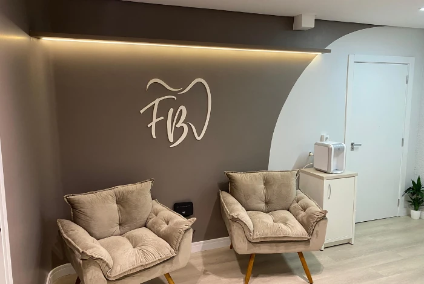
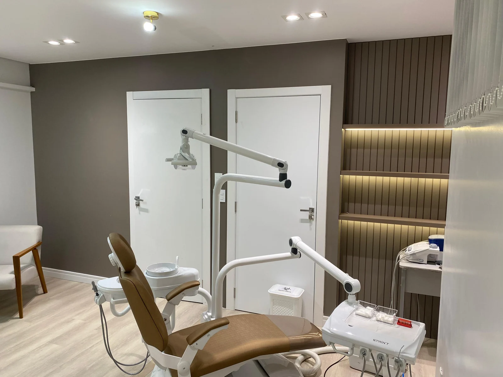

01
Clínica geral
Prevenção, limpeza e acompanhamento para manter a saúde do seu sorriso em dia.
Cuidar do meu sorrisoMais do que cuidar dos dentes, cuidar de você. Um atendimento próximo, no seu tempo, para sorrir com saúde e confiança.
Odontologia com atenção aos detalhes.
E a quem mais importa: você.

Da prevenção à reabilitação, encontre o cuidado para o seu momento. Tudo começa com uma avaliação e uma boa conversa.
Prevenção, limpeza e acompanhamento para manter a saúde do seu sorriso em dia.
Cuidar do meu sorrisoPlanejamento individualizado para repor dentes e recuperar a confiança ao sorrir e mastigar.
Conhecer o tratamentoSoluções personalizadas para devolver função, conforto e harmonia ao seu sorriso.
Conhecer as possibilidadesCuidados com o alinhamento dos dentes e a mordida de crianças, adolescentes e adultos.
Conversar sobre aparelhosAtenção e planejamento para tratar a parte interna do dente e buscar sua preservação.
Tirar minhas dúvidasConte para a gente o que você precisa. Vamos dar o primeiro passo juntos.
Vamos conversarO tratamento indicado para você é definido após avaliação individual.

Acreditamos que cuidar de um sorriso começa por ouvir a pessoa por trás dele. Suas dúvidas, sua história e suas expectativas fazem parte de cada atendimento.
Em nosso espaço em Toledo, cada detalhe convida você a se sentir à vontade. Da primeira conversa ao acompanhamento, queremos que você entenda e participe do seu cuidado.
Espaço para conversar, perguntar e se sentir seguro.
Planejamento que considera suas necessidades.
Orientações para você compreender seu tratamento.
Agendar é simples. Estamos aqui para receber você.
Fale com a gente e conte o que você procura para o seu sorriso.
Converse com nossa equipe e consulte a disponibilidade para sua visita.
Na avaliação, vamos ouvir você e conversar sobre os próximos passos.
Ficou com mais alguma pergunta?
Nossa equipe conversa com você.
É só tocar em um dos botões de WhatsApp do site. Nossa equipe vai conversar com você, consultar os horários disponíveis e confirmar o agendamento.
É o momento de conhecer sua história, ouvir suas necessidades e avaliar seu sorriso. A partir dessa conversa, são explicadas as possibilidades de tratamento e os próximos passos.
Sim. Conte para a gente como você se sente ao entrar em contato. Essa conversa ajuda a equipe a acolher você e explicar cada etapa do atendimento com calma.
O valor depende da avaliação e do tratamento indicado. Fale com nossa equipe para consultar as condições de pagamento e esclarecer suas dúvidas antes de iniciar.
Será um prazer receber você na FB Odontologia.
Segunda a sexta, das 8h às 18h
Sábado, das 8h às 12h
Reserve um momento para você. Estamos esperando sua mensagem.